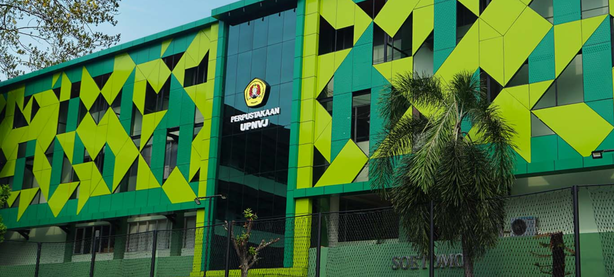
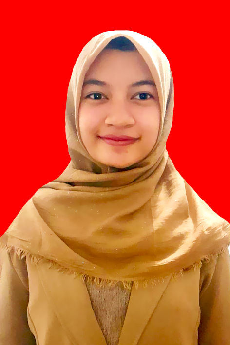
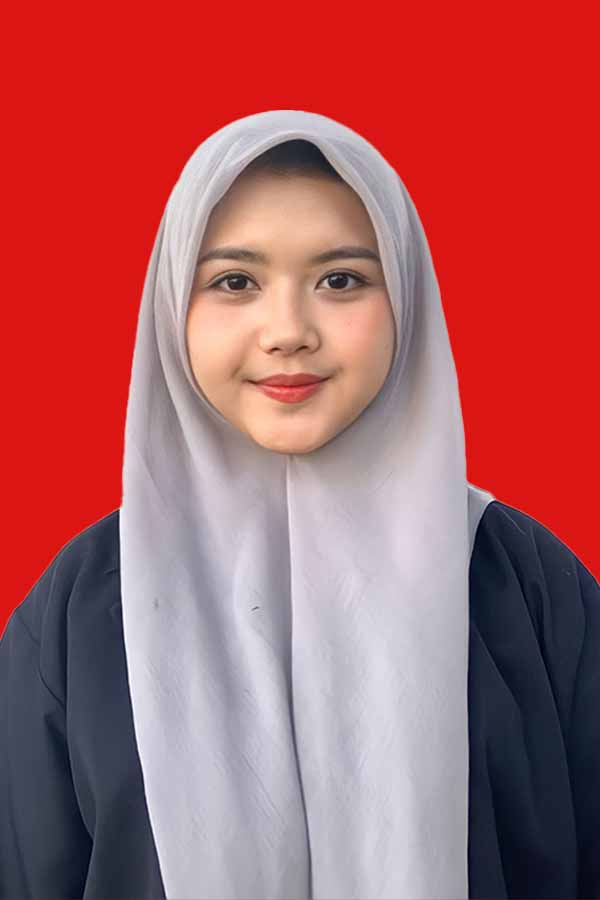

Visi
Menjadi pusat informasi dan referensi yang inovatif, dan berdaya saing berbasis teknologi informasi dalam mendukung Tri Dharma Perguruan Tinggi.
Misi
Fajar Nugroho, S. Kom., M.P.
Kepala PerpustakaanSaidun Sinaga, S.I.P
Pengolah Bahan PustakaDeni Wahyudin, S.IP
Pengolah Bahan PustakaZaki Mubarok, S.IP
Pengolah Bahan PustakaMuamar Khadafi, S.IP
Pengelola Pustaka ElektronikFitrianda, S.IP
Pengelola Pustaka Elektronik (FT)Sarodih Maulana Nur
Pengadministrasi PerpustakaanApriadi S.S.I
PustakawanLisye Maulina, S.IP
Pengelola Pustaka Elektronik (FIKES)Ratna Suminar, SE
Pengelola Keuangan
Nisrina Salma
Desain GrafisRosita Nur Azizah S.S.I
Pustakawan
Annisa Nur Azizah S.S.I
Pustakawan